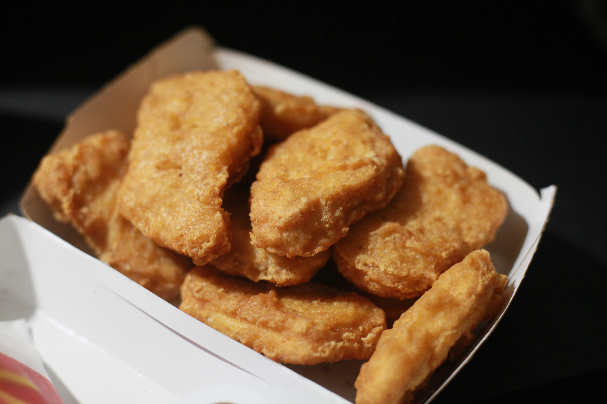

Chicken Nuggets Recipe

Description
These homemade Chicken Nuggets are made with ground chicken and panko breadcrumbs.
They can be oven baked, fried, or cooked in the air fryer. Your kids will love to eat these and can even help you make them!
Ingredients
- 1 lb. ground chicken,
- 3 Tablespoons milk,
- 1 slice bread,
- ¾ teaspoon garlic salt
- 1/8 teaspoon black pepper
- 1 egg,
- 3 Tablespoons melted butter.
Steps
- Preheat oven to 375 degrees.
- Add the bread to a bowl and pour the milk on top. Let it absorb for 2-3 minutes. (Note: If using breadcrumbs instead of bread, you my need to add 1-2 more tablespoons of milk.) Add the garlic salt and black pepper. Use your hands to combine. This is called a panade and it keeps the chicken nuggets juicy. (vs. hard and dense.)
- Add the ground chicken to a large bowl and add the panade. Use your hands to mix until just combined, don’t overmix. Take a tablespoon and scoop out the chicken. Form into nuggets and set aside.
- Combine the breading mix on a large plate and set aside.
- Brush each side of the nuggets with the whisked egg. Transfer them to the breading plate and generously coat each one until completely covered. Place on a baking sheet.
- Brush half of the melted butter on the top of the nuggets, this helps them turn a nice golden brown. You can also use canola oil spray but they won’t get quite as golden. If some nuggets are darker than others, place the darker ones in the middle of the baking sheet and the lighter ones along the edge.
- Bake for 7 minutes and remove from the oven.
- Brush each side with more melted butter and bake for 8 more minutes. (You can use canola oil spray if preferred but they won’t get quite as golden.)
- Remove and let them rest for a few minutes prior to serving.